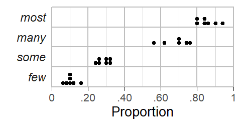
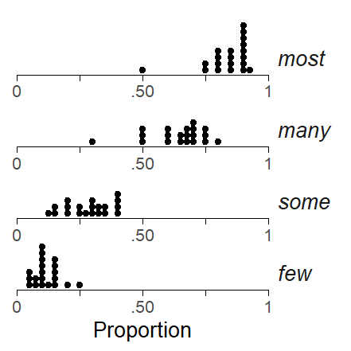

![]()
R setup
library(tidyverse)
library(betareg)
library(lattice)
source("C:/Users/ba4rh5/Work Folders/My Files/R projects/my_utils_website.R")library(tidyverse)
library(betareg)
library(lattice)
source("C:/Users/ba4rh5/Work Folders/My Files/R projects/my_utils_website.R")A long-term project The BSLVC is a large-scale survey on the use of various lexical and grammatical structures in different varieties of English. In what follows, we will use data from the grammar part of the questionnaire (see Web Appendix 2 for an illustration), which asks respondents to indicate, on a 6-point rating scale, how prevalent a specific feature is in their home country or region. Ratings are elicited for two usage contexts, speech and writing, and each sentence is therefore presented in two modes (auditorily and in writing). Participants are asked to give an estimate of how many speakers in their home country use this kind of structure. The ordinal response scale is fully verbalized and consists of the following sequence of labels: no-one, few, some, many, most, everyone.
The meaning of the quantifiers few, some, many, and most can be expressed as a relative frequency, e.g. as a proportion (ranging between 0 and 1). A few studies have looked at how speakers interpret these expressions (Newstead, Pollard, and Riezebos 1987; Borges and Sawyers 1974; Stateva et al. 2019; Tiel, Franke, and Sauerland 2021). Proportional estimates for the quantifiers few, some, many, and most appear in Figure 1. For more information on the corresponding studies, please refer to (Soenning2024?).
While estimates for the individual items show some variation across studies (and experiments within studies), they allow us to roughly pin down the quantitative meaning of the expression. If we take a weighted average across the studies, where the weight of the individual percentages is proportional to the number of subjects, we obtain the following means:
d <- readxl::read_xlsx("C:/Users/ba4rh5/Work Folders/My Files/R projects/_lsoenning.github.io/posts/2024-01-11_beta_regression_quantifiers/data/quantifier_survey.xlsx")
p1 <- d |> ggplot(aes(x=percentage)) +
geom_dotplot(method="histodot", binwidth = 2, dotsize = .95, stackratio = 1.2) +
facet_grid(reorder(verbal_label, -percentage, median) ~ ., switch="both") +
xlab("Percentage") +
coord_cartesian(clip = "off") +
scale_y_continuous(expand = c(.1,.05)) +
scale_x_continuous(limits=c(0,100), expand=c(0,0), breaks = c(0,20,40,60,80,100),
labels=c("0", "20", "40", "60", "80", "100 ")) +
theme_dotplot() +
theme(strip.clip = "off",
strip.text = element_text(face="italic"),
axis.line.x = element_line(color="transparent"),
panel.border = element_rect(color="grey", fill = "transparent", linewidth = .4),
panel.grid.major.x = element_line(color="grey", linewidth = .4),
panel.grid.minor.x = element_line(color="lightgrey", linewidth = .2),
panel.spacing = unit(0, "lines"))
I collected additional data on the perception of these quantifiers, using as participants university students and colleagues that took part in the English Linguistics research seminar in the winter term of 2023. I obtained data from 20 individuals (around 2/3 being students) by handing out paper slips with the following instructions:

Participants were given two minutes to complete the task. I then colected the paper sheets and later entered the data into a spreadsheet:
dat <- readxl::read_xlsx("C:/Users/ba4rh5/Work Folders/My Files/R projects/_lsoenning.github.io/posts/2024-01-11_beta_regression_quantifiers/data/data_quantifiers.xlsx")
dat# A tibble: 20 x 5
subject few some many most
<chr> <dbl> <dbl> <dbl> <dbl>
1 subj_01 5 15 30 50
2 subj_02 20 35 70 80
3 subj_03 10 27.5 65 85
4 subj_04 8 20 51 80
5 subj_05 12 30 50 75
6 subj_06 15 35 60 90
7 subj_07 25 40 67.5 92.5
8 subj_08 10 30 60 80
9 subj_09 15 33 67 85
10 subj_10 10 33 67 90
11 subj_11 10 25 50 75
12 subj_12 10 40 70 90
13 subj_13 7 20 60 85
14 subj_14 15 40 69 90
15 subj_15 15 30 75 85
16 subj_16 6 14 75 91
17 subj_17 5 12.5 65 80
18 subj_18 10 25 70 90
19 subj_19 15 40 75 90
20 subj_20 10 20 80 90 Our first step is to rearrange these data (from wide to long format) and to translate percentages into proportions, as this is the scale on which beta regression operates:
d <- dat |>
gather(
few:most,
key = quantifier,
value = percentage) |>
mutate(
proportion = percentage/100
) We start by looking at the distribution of our ratings:
p2 <- d |>
ggplot(aes(x=proportion)) +
geom_dotplot(method = "histodot", binwidth = .025, dotsize = 1.2) +
facet_wrap(reorder(quantifier, -proportion) ~ .,
ncol=1, scales="free", strip.position = "right") +
scale_x_continuous(limits=c(0,1), breaks=c(0, .25, .5, .75, 1),
expand=c(0,0), labels=c("0", "", ".50", "", "1")) +
xlab("Proportion") +
theme_dotplot() +
coord_cartesian(clip = 'off') +
theme(strip.text = element_text(face = "italic"))
For background on the beta distribution and beta regression, please refer to this excellent blog post (Heiss 2021).
m <- betareg(
proportion ~ -1 + quantifier | -1 + quantifier,
data = d,
link = "logit")
summary(m)
Call:
betareg(formula = proportion ~ -1 + quantifier | -1 + quantifier, data = d,
link = "logit")
Standardized weighted residuals 2:
Min 1Q Median 3Q Max
-2.9299 -0.5736 0.0573 0.7255 2.1464
Coefficients (mean model with logit link):
Estimate Std. Error z value Pr(>|z|)
quantifierfew -2.02491 0.10239 -19.777 < 2e-16 ***
quantifiermany 0.55735 0.10605 5.255 1.48e-07 ***
quantifiermost 1.61718 0.13068 12.375 < 2e-16 ***
quantifiersome -0.93525 0.09963 -9.387 < 2e-16 ***
Phi coefficients (precision model with log link):
Estimate Std. Error z value Pr(>|z|)
quantifierfew 3.8130 0.3166 12.042 <2e-16 ***
quantifiermany 2.8994 0.3084 9.400 <2e-16 ***
quantifiermost 3.0036 0.3141 9.563 <2e-16 ***
quantifiersome 3.1721 0.3110 10.199 <2e-16 ***
---
Signif. codes: 0 '***' 0.001 '**' 0.01 '*' 0.05 '.' 0.1 ' ' 1
Type of estimator: ML (maximum likelihood)
Log-likelihood: 92.76 on 8 Df
Pseudo R-squared: 0.8938
Number of iterations: 31 (BFGS) + 2 (Fisher scoring) est_mu <- plogis(coef(m)[1:4])
est_phi <- exp(coef(m)[5:8])
ci_mu <- plogis(confint(m)[1:4,])
# est_mu <- plogis(coef(m)[1:4] %*% t(cbind(1, contr.treatment(4))))
# est_phi <- exp(coef(m)[5:8] %*% t(cbind(1, contr.treatment(4))))muphi_to_shapes <- function(mu, phi) {
shape1 <- mu * phi
shape2 <- (1 - mu) * phi
return(list(shape1 = shape1, shape2 = shape2))
}est_shape1 <- muphi_to_shapes(est_mu, est_phi)$shape1
est_shape2 <- muphi_to_shapes(est_mu, est_phi)$shape2p1 <- xyplot(
1~1, type="n", xlim=c(0,1), ylim=c(0, 16),
par.settings=my_settings, axis=axis_bottom,
scales=list(x=list(at=c(0,.2,.4,.6,.8,1),
labels=c("0","20","40","60","80","100 "))),
xlab="Estimated percentage", ylab="Density ",
panel=function(x,y){
panel.polygon(x = c(seq(0,1,length=100), rev(seq(0,1,length=100))),
y = c(dbeta(seq(0,1,length=100), shape1 = est_shape1[1], shape2 = est_shape2[1]),
rep(0, 100)),
col=1, alpha=.1)
panel.polygon(x = c(seq(0,1,length=100), rev(seq(0,1,length=100))),
y = c(dbeta(seq(0,1,length=100), shape1 = est_shape1[2], shape2 = est_shape2[2]),
rep(0, 100)),
col=1, alpha=.1)
panel.polygon(x = c(seq(0,1,length=100), rev(seq(0,1,length=100))),
y = c(dbeta(seq(0,1,length=100), shape1 = est_shape1[3], shape2 = est_shape2[3]),
rep(0, 100)),
col=1, alpha=.1)
panel.polygon(x = c(seq(0,1,length=100), rev(seq(0,1,length=100))),
y = c(dbeta(seq(0,1,length=100), shape1 = est_shape1[4], shape2 = est_shape2[4]),
rep(0, 100)),
col=1, alpha=.1)
panel.points(
x = seq(0,1,length=100),
y = dbeta(seq(0,1,length=100), shape1 = est_shape1[1], shape2 = est_shape2[1]),
type="l")
panel.points(
x = seq(0,1,length=100),
y = dbeta(seq(0,1,length=100), shape1 = est_shape1[2], shape2 = est_shape2[2]),
type="l")
panel.points(
x = seq(0,1,length=100),
y = dbeta(seq(0,1,length=100), shape1 = est_shape1[3], shape2 = est_shape2[3]),
type="l")
panel.points(
x = seq(0,1,length=100),
y = dbeta(seq(0,1,length=100), shape1 = est_shape1[4], shape2 = est_shape2[4]),
type="l")
panel.points(x=est_mu, y=13, pch=19, cex=1.25)
panel.arrows(x0=ci_mu[,1], x1=ci_mu[,2], y0=13, y1=13, code=3, angle=90, length=.02)
panel.text(x=est_mu, y=11, label=paste0(round(est_mu*100), "%"))
panel.text(x=est_mu, y=15.5, label=c("few", "many", "most", "some"), font=3)
})
p1library(brms)Warning: Paket 'brms' wurde unter R Version 4.2.3 erstelltLade nötiges Paket: RcppWarning: Paket 'Rcpp' wurde unter R Version 4.2.3 erstelltLoading 'brms' package (version 2.19.0). Useful instructions
can be found by typing help('brms'). A more detailed introduction
to the package is available through vignette('brms_overview').
Attache Paket: 'brms'Das folgende Objekt ist maskiert 'package:stats':
arm_b <- brm(
bf(proportion ~ -1 + quantifier,
phi ~ -1 + quantifier),
data = d,
family = Beta(),
chains = 4, iter = 2000, warmup = 1000, cores = 4,
backend = "cmdstanr",
file = "C:/Users/ba4rh5/Work Folders/My Files/R projects/_lsoenning.github.io/posts/2024-01-11_beta_regression_quantifiers/m_b"
)Start samplingChain 1 Informational Message: The current Metropolis proposal is about to be rejected because of the following issue:Chain 1 Exception: beta_lpdf: First shape parameter is 0, but must be positive finite! (in 'C:/Users/ba4rh5/AppData/Local/Temp/RtmpUfaCOc/model-1b04679f46d6.stan', line 36, column 6 to column 71)Chain 1 If this warning occurs sporadically, such as for highly constrained variable types like covariance matrices, then the sampler is fine,Chain 1 but if this warning occurs often then your model may be either severely ill-conditioned or misspecified.Chain 1 Chain 2 Informational Message: The current Metropolis proposal is about to be rejected because of the following issue:Chain 2 Exception: beta_lpdf: Second shape parameter is 0, but must be positive finite! (in 'C:/Users/ba4rh5/AppData/Local/Temp/RtmpUfaCOc/model-1b04679f46d6.stan', line 36, column 6 to column 71)Chain 2 If this warning occurs sporadically, such as for highly constrained variable types like covariance matrices, then the sampler is fine,Chain 2 but if this warning occurs often then your model may be either severely ill-conditioned or misspecified.Chain 2 Chain 3 Informational Message: The current Metropolis proposal is about to be rejected because of the following issue:Chain 3 Exception: beta_lpdf: First shape parameter is 0, but must be positive finite! (in 'C:/Users/ba4rh5/AppData/Local/Temp/RtmpUfaCOc/model-1b04679f46d6.stan', line 36, column 6 to column 71)Chain 3 If this warning occurs sporadically, such as for highly constrained variable types like covariance matrices, then the sampler is fine,Chain 3 but if this warning occurs often then your model may be either severely ill-conditioned or misspecified.Chain 3 Chain 3 Informational Message: The current Metropolis proposal is about to be rejected because of the following issue:Chain 3 Exception: beta_lpdf: Second shape parameter is 0, but must be positive finite! (in 'C:/Users/ba4rh5/AppData/Local/Temp/RtmpUfaCOc/model-1b04679f46d6.stan', line 36, column 6 to column 71)Chain 3 If this warning occurs sporadically, such as for highly constrained variable types like covariance matrices, then the sampler is fine,Chain 3 but if this warning occurs often then your model may be either severely ill-conditioned or misspecified.Chain 3 Chain 4 Informational Message: The current Metropolis proposal is about to be rejected because of the following issue:Chain 4 Exception: beta_lpdf: First shape parameter is inf, but must be positive finite! (in 'C:/Users/ba4rh5/AppData/Local/Temp/RtmpUfaCOc/model-1b04679f46d6.stan', line 36, column 6 to column 71)Chain 4 If this warning occurs sporadically, such as for highly constrained variable types like covariance matrices, then the sampler is fine,Chain 4 but if this warning occurs often then your model may be either severely ill-conditioned or misspecified.Chain 4 m_b2 <- brm(
bf(proportion ~ -1 + quantifier + (1|subject),
phi ~ -1 + quantifier),
data = d,
family = Beta(),
chains = 4, iter = 2000, warmup = 1000, cores = 4,
backend = "cmdstanr",
file = "C:/Users/ba4rh5/Work Folders/My Files/R projects/_lsoenning.github.io/posts/2024-01-11_beta_regression_quantifiers/m_b2"
)muphi_to_shapes <- function(mu, phi) {
shape1 <- mu * phi
shape2 <- (1 - mu) * phi
return(list(shape1 = shape1, shape2 = shape2))
}No random intercepts
est_mu <- plogis(fixef(m_b)[1:4,1])
est_phi <- exp(fixef(m_b)[5:8,1])
ci_mu <- plogis(fixef(m_b)[1:4,3:4])
# est_mu <- plogis(coef(m)[1:4] %*% t(cbind(1, contr.treatment(4))))
# est_phi <- exp(coef(m)[5:8] %*% t(cbind(1, contr.treatment(4))))est_shape1 <- muphi_to_shapes(est_mu, est_phi)$shape1
est_shape2 <- muphi_to_shapes(est_mu, est_phi)$shape2p1 <- xyplot(
1~1, type="n", xlim=c(0,1), ylim=c(0, 16),
par.settings=my_settings, axis=axis_bottom,
scales=list(x=list(at=c(0,.2,.4,.6,.8,1),
labels=c("0","20","40","60","80","100 "))),
xlab="Estimated percentage", ylab="Density ",
panel=function(x,y){
panel.polygon(x = c(seq(0,1,length=100), rev(seq(0,1,length=100))),
y = c(dbeta(seq(0,1,length=100), shape1 = est_shape1[1], shape2 = est_shape2[1]),
rep(0, 100)),
col=1, alpha=.1)
panel.polygon(x = c(seq(0,1,length=100), rev(seq(0,1,length=100))),
y = c(dbeta(seq(0,1,length=100), shape1 = est_shape1[2], shape2 = est_shape2[2]),
rep(0, 100)),
col=1, alpha=.1)
panel.polygon(x = c(seq(0,1,length=100), rev(seq(0,1,length=100))),
y = c(dbeta(seq(0,1,length=100), shape1 = est_shape1[3], shape2 = est_shape2[3]),
rep(0, 100)),
col=1, alpha=.1)
panel.polygon(x = c(seq(0,1,length=100), rev(seq(0,1,length=100))),
y = c(dbeta(seq(0,1,length=100), shape1 = est_shape1[4], shape2 = est_shape2[4]),
rep(0, 100)),
col=1, alpha=.1)
panel.points(
x = seq(0,1,length=100),
y = dbeta(seq(0,1,length=100), shape1 = est_shape1[1], shape2 = est_shape2[1]),
type="l")
panel.points(
x = seq(0,1,length=100),
y = dbeta(seq(0,1,length=100), shape1 = est_shape1[2], shape2 = est_shape2[2]),
type="l")
panel.points(
x = seq(0,1,length=100),
y = dbeta(seq(0,1,length=100), shape1 = est_shape1[3], shape2 = est_shape2[3]),
type="l")
panel.points(
x = seq(0,1,length=100),
y = dbeta(seq(0,1,length=100), shape1 = est_shape1[4], shape2 = est_shape2[4]),
type="l")
panel.points(x=est_mu, y=13, pch=19, cex=1.25)
panel.arrows(x0=ci_mu[,1], x1=ci_mu[,2], y0=13, y1=13, code=3, angle=90, length=.02)
panel.text(x=est_mu, y=11, label=paste0(round(est_mu*100), "%"))
panel.text(x=est_mu, y=15.5, label=c("few", "many", "most", "some"), font=3)
})
p1With ranodom intercepts
est_mu <- plogis(fixef(m_b2)[1:4,1])
est_phi <- exp(fixef(m_b2)[5:8,1])
ci_mu <- plogis(fixef(m_b2)[1:4,3:4])est_shape1 <- muphi_to_shapes(est_mu, est_phi)$shape1
est_shape2 <- muphi_to_shapes(est_mu, est_phi)$shape2p1 <- xyplot(
1~1, type="n", xlim=c(0,1), ylim=c(0, 16),
par.settings=my_settings, axis=axis_bottom,
scales=list(x=list(at=c(0,.2,.4,.6,.8,1),
labels=c("0","20","40","60","80","100 "))),
xlab="Estimated percentage", ylab="Density ",
panel=function(x,y){
panel.polygon(x = c(seq(0,1,length=100), rev(seq(0,1,length=100))),
y = c(dbeta(seq(0,1,length=100), shape1 = est_shape1[1], shape2 = est_shape2[1]),
rep(0, 100))*.6,
col=1, alpha=.1)
panel.polygon(x = c(seq(0,1,length=100), rev(seq(0,1,length=100))),
y = c(dbeta(seq(0,1,length=100), shape1 = est_shape1[2], shape2 = est_shape2[2]),
rep(0, 100))*.6,
col=1, alpha=.1)
panel.polygon(x = c(seq(0,1,length=100), rev(seq(0,1,length=100))),
y = c(dbeta(seq(0,1,length=100), shape1 = est_shape1[3], shape2 = est_shape2[3]),
rep(0, 100))*.6,
col=1, alpha=.1)
panel.polygon(x = c(seq(0,1,length=100), rev(seq(0,1,length=100))),
y = c(dbeta(seq(0,1,length=100), shape1 = est_shape1[4], shape2 = est_shape2[4]),
rep(0, 100))*.6,
col=1, alpha=.1)
panel.points(
x = seq(0,1,length=100),
y = dbeta(seq(0,1,length=100), shape1 = est_shape1[1], shape2 = est_shape2[1])*.6,
type="l")
panel.points(
x = seq(0,1,length=100),
y = dbeta(seq(0,1,length=100), shape1 = est_shape1[2], shape2 = est_shape2[2])*.6,
type="l")
panel.points(
x = seq(0,1,length=100),
y = dbeta(seq(0,1,length=100), shape1 = est_shape1[3], shape2 = est_shape2[3])*.6,
type="l")
panel.points(
x = seq(0,1,length=100),
y = dbeta(seq(0,1,length=100), shape1 = est_shape1[4], shape2 = est_shape2[4])*.6,
type="l")
panel.points(x=est_mu, y=13, pch=19, cex=1.25)
panel.arrows(x0=ci_mu[,1], x1=ci_mu[,2], y0=13, y1=13, code=3, angle=90, length=.02)
panel.text(x=est_mu, y=11, label=paste0(round(est_mu*100), "%"))
panel.text(x=est_mu, y=15.5, label=c("few", "many", "most", "some"), font=3)
})
p1@online{sönning2024,
author = {Sönning, Lukas},
title = {Modeling the Interpretation of Quantifiers Using Beta
Regression},
date = {2024-01-11},
url = {https://lsoenning.github.io/posts/2024-01-11_beta_regression_quantifiers/},
langid = {en}
}